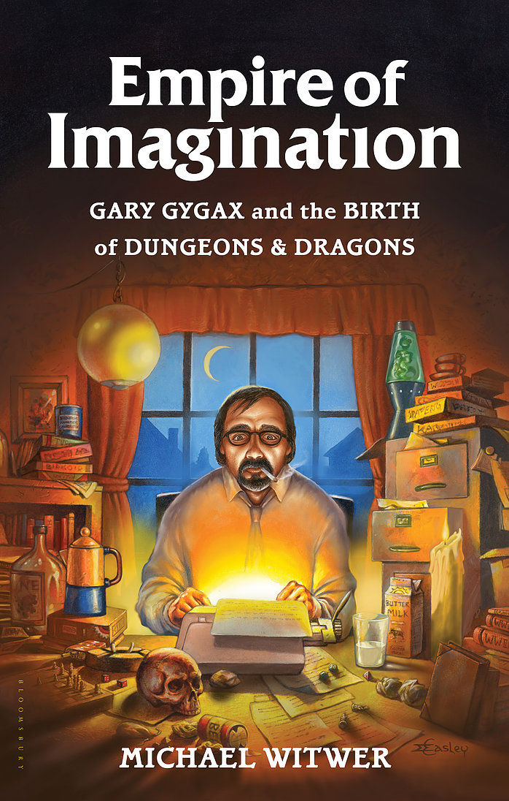

The Empire of Imagination

Empire of Imagination
I just finished the biography of Gary Gygax by Michael Witmer. It’s a very good book.
I don’t know the history of Gary Gygax very well, so I can’t vouch for its authenticity, but the format of telling chronological vignettes from Gary’s life works well.
I had the pleasure of meeting Gary a couple of times at GenCon. He was affable and loved to chat about D&D with his fans. This book reflects the man that I met.
Unfortunately, Gary’s life was not always a happy one, and Mr. Whitmer doesn’t sugar coat it. Nor does he take Gary to task, but sticks to his story, such as it is. He portrays Gary as human.
I especially appreciated the history of TSR from Gary’s perspective. I learned more about who Gary was and how he ended up where he did. Business acumen was not one of his talents.
I did feel that the last couple of chapters describing the influence of Gary and Dungeons & Dragons were a little overstated. However, considering the influence that D&D has had on me, perhaps it isn’t hyperbole. I would be a different person if I hadn’t played D&D.
After reading the book, I think of Gary a bit like J.R.R. Tolkien (something I’m not sure he would appreciate): a great imagination that ignited something special, but by no means the best at his craft. Still, without his first steps, there would not be a path for others to have followed.
If you have a love for RPGs and would like to know their creator better, I recommend the book whole-heartedly.